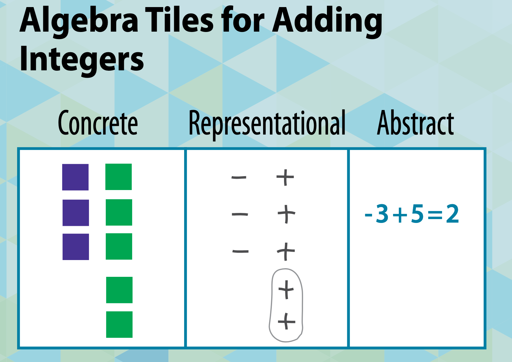
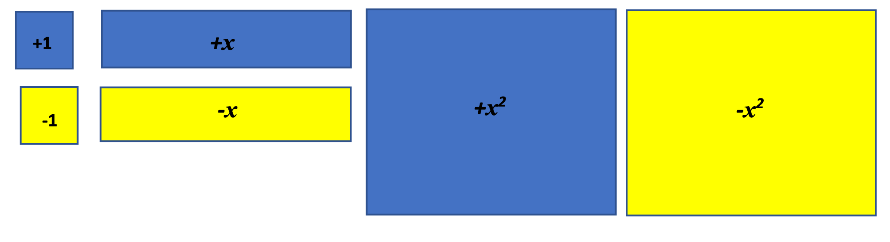
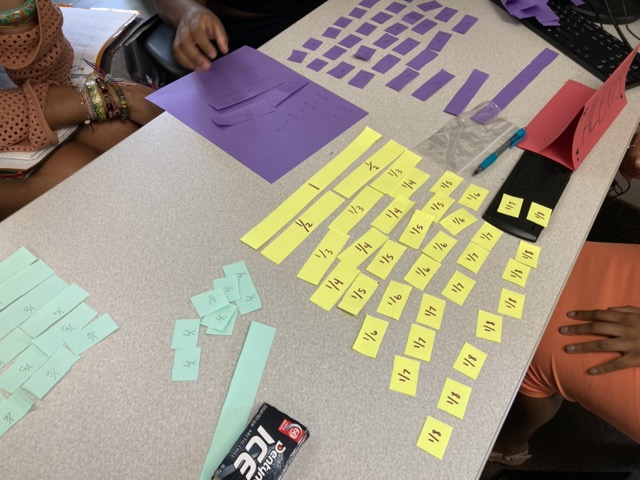
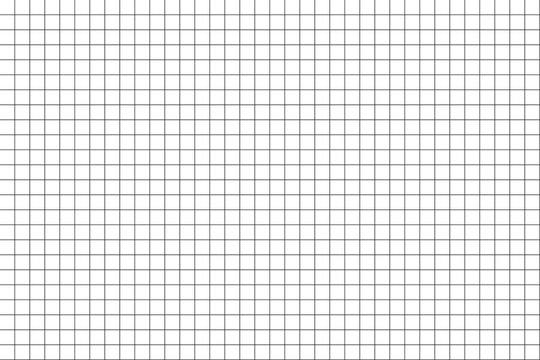
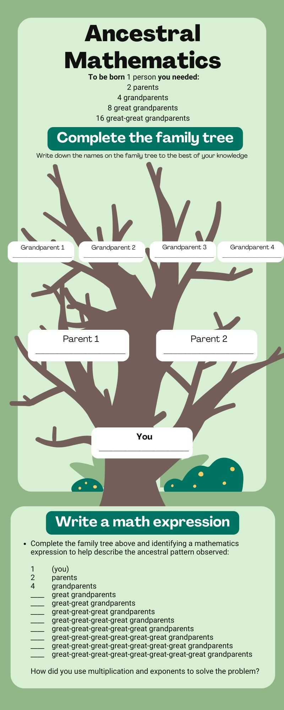

Module 3: Quantity and Operations
EDUC 315 - Howard University
Module: Quantity and Operations
Module Overview
This module explores the mathematical concepts focusing on quantity and operations within the context of elementary mathematics. The module covers the historical development of arithmetic operations, introduces the Concrete-Representational-Abstract (CRA) approach to teaching mathematics, delves into the properties of basic arithmetic operations, and examines the relationships between different operations. By the end of this module, you will have a comprehensive understanding of quantity and operations to effectively deal with various mathematical representations.
Quantity and Operation
Key points:
- Quantities can be discrete (countable) or continuous (measurable)
- Quantities are often associated with units of measurement
- Quantities form the basis for mathematical operations and comparisons
Examples:
- The number of apples in a basket (discrete quantity)
- The volume of water in a container (continuous quantity)
- The temperature of a room (measurable quantity)
- The speed of a car (derived quantity)
The primary operations
- Operations transform quantities into new quantities
- They follow specific rules and properties (e.g., commutative, associative)
- Understanding operations is crucial for problem-solving and algebraic thinking
Combining two or more quantities (e.g., 5 + 3 = 8)
Finding the difference between quantities (e.g., 10 - 4 = 6)
Repeated addition or scaling (e.g., 3 × 4 = 12)
Distributing a quantity into equal parts (e.g., 15 ÷ 3 = 5)
Repeated multiplication (e.g., 2³ = 8)
Inverse of exponentiation (e.g., \(\sqrt{16} = 4\))
Concrete-Representational-Abstract (CRA)
The Concrete-Representational-Abstract (CRA) process is an instructional approach in mathematics that helps students develop a deeper understanding of mathematical concepts by progressing through three stages:
- Concrete Stage:
- Students use physical, hands-on objects to model mathematical concepts
- Examples include base-10 blocks, counters, fraction bars, or algebra tiles
- This stage allows students to manipulate tangible objects to solve problems

- Representational (or Pictorial) Stage:
- Students transition to using visual representations of the concrete objects
- This may involve drawings, diagrams, or other pictorial models
- Examples include number lines, bar models, or sketches of manipulatives

- Abstract Stage:
- Students work with abstract symbols and notation
- This includes numbers, variables, and mathematical symbols (+, -, x, ÷)
- Students apply their understanding to solve problems using standard algorithms
The CRA approach deepens mathematical understanding and help students internalize abstract concepts by first grounding them in concrete experiences.
Sum and Difference
Algebra tiles
Depending on the grade of instruction, algebra tiles can be used as a concrete way to express various operations, such as the sum and difference.



Product and Quotient
Fraction tiles



Assessing multiple skills
Multiplication (product) with fractions (quotients)

Exponents and Roots
There are many ways to teach exponents and roots:
Teaching Exponents
Pattern Blocks
Pattern blocks can be used to visually demonstrate exponents. For example:
- Use one triangle to represent \(1 \times 1\)
- Four triangles together represent \(2 \times 2\)
- Nine triangles together represent \(3 \times 3\)

Draw the pattern for \(4 \times 4\) and \(5 \times 5\).
These patterns helps students visualize the quantity of exponents but we want to also show them representations of exponents as repeated multiplication; we can use base-ten blocks to extend their understanding.
Base Ten Blocks
Base ten blocks work well for teaching powers of 10:
- A unit cube represents \(10^0 = (1)\)
- A rod represents \(10^1 = 10 = (10)\)
- A flat represents \(10^2 = 10 x 10 = (100)\)
- A large cube represents \(10^3 = 10 x 10 x 10 = (1000)\)
Grid Paper
Grid paper allows students to draw squares and rectangles to represent exponents:
- A \(2 x 2\) square represents \(2^2\)
- A \(3 x 3\) square represents \(3^2\)
- A \(2 x 2 x 2\) cube represents \(2^3\)

Draw the figures representing \(3^3\) and \(4^2\).
Teaching Roots
Algebra Tiles
Algebra tiles are also good for teaching square roots:
- Use the square tiles to build perfect square numbers (1, 4, 9, 16, etc.)
- The side length of the square represents the square root
For example, a \(3x3\) square of tiles has an area of \(9\), so the square root of \(9\) is \(3\).
Grid Paper
Grid paper can be used to estimate non-perfect square roots:
- Draw a square with the given area (e.g. 17)
- Count the side length to estimate the square root
- Refine by adding partial squares
This provides a visual model for estimating irrational square roots.

Number Lines
Use a number line to place square roots between perfect squares:
- Mark perfect squares (1, 4, 9, 16, 25, etc.)
- Estimate locations of other square roots between them
This helps students understand square roots as numbers between integers.
We can use manipulatives to build conceptual understanding before moving to procedures. Allow students to explore and discover patterns through hands-on activities. Gradually connect the concrete models to symbolic notation as students gain understanding.
STEM figures and history
Incorporating history into your mathematics lessons provide an opportunity for interdisciplinary learning, and it encourages students to see mathematics in action through real-world examples.
Ancestral mathematics

Using the image above as a sample, outline an Ancestral Mathematics class activity and create or modify the worksheet to follow along with your activity.